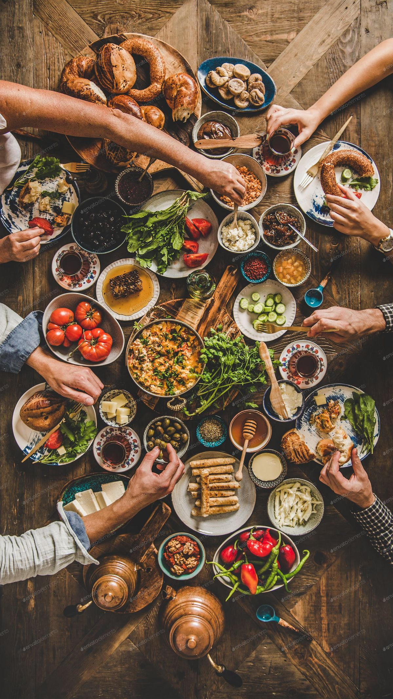
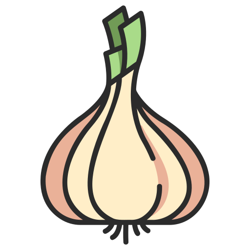
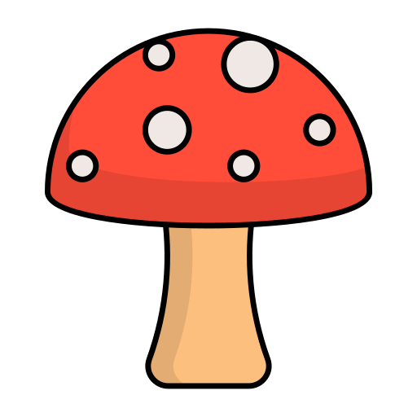

Итальянские каникулы
🥘 Супы
Суп с морепродуктами “По-Средиземноморски”
Насыщенный и ароматный бульон с морепродуктами, спелыми томатами, пикантным перцем чили, свежей зеленью, в сопровождении ломтика хрустящей чесночной чиабатты.
Особенности:
🥛 лактоза |🌶️ перец |  лук |
лук |

чеснок |
В суп добавляют лук шалот, лук порей, чеснок и перец чили.
Подается с чесночной чиабаттой.

Состав:
- На ароматном масле с добавлением сливочного обжариваются чеснок, лук шалот, томаты, перец чили.
- Добавляется бульон-биск (варить 5 мин.).
- На ароматном масле слегка обжариваются морепродукты. Далее добавляется биск, рыбный бульон, листья петрушки и базилика.
- Суп подается с чесночной чиабаттой.
Морепродукты:
- Кальмар.
- Креветка.
- Филе сибаса.
- Филе сёмги.
- Филе дорадо (с кожей).
- Мидии.
- Вонголе.
Бульон-биск:
- Панцыри креветок, кости белых рыб.
- Вода.
- Морковь, лук репчатый, сельдерей.
- Масло оливковое.
- Паста томатная.
- Перец черный, соль.
Бульон рыбный:
- Кости рыб.
- Морковь, сельдерей, лук порей, лук репчатый.
- Вода.
- Лавровый лист.
- Перец черный.
Вонголе — это морские двустворчатые моллюски, традиционные для средиземноморской кухни. Название происходит от итальянского vongola, корни которого уходят в латинское conchula — «маленькая раковина». Со временем слово стало не только обозначением самого моллюска, но и символом одного из самых известных блюд прибрежной Италии.
Вонголе обитают в прибрежных зонах Средиземного моря и Атлантики, зарываясь в песчаное дно на небольшой глубине. Именно такая среда придаёт им характерный чистый, слегка солоноватый вкус с выраженной «морской» минеральностью.
Их особенность — в нежном, сладковатом мясе и большом количестве ароматного сока, который при приготовлении образует естественный соус. В отличие от мидий, вонголе меньше по размеру, имеют более тонкую раковину и значительно более деликатный вкус. Мидии плотнее по текстуре и ярче по аромату, тогда как вонголе ценятся за утончённость и баланс, позволяющий вкусу моря доминировать, не перегружая блюдо.
Горячие блюда
Ризотто с морепродуктами
Классическое сливочное ризотто, приготовленное на концентрированном рыбном бульоне, с ассорти из морепродуктов, спелыми томатами и ароматным чесночным маслом.
Особенности:
🥛 лактоза |  лук | чеснок |
лук | чеснок |  зелень
зелень
Ризотто готовится с добавлением: чеснока, лука шалот, лука порей, томатов и белого вина.
Состав:
- На ароматном масле с добавлением сливочного обжариваются чеснок, лук шалот, рис Арборио.
- Добавляются сливки (33%), бульон-биск, рыбный бульон, а также соус аква-томат и белое вино.
- На ароматном масле (с добавлением чесночного масла и петрушки) обжариваются морепродукты.
- Готовый ризотто выкладывается в тарелку, сверху морепродукты.
Морепродукты:
- Кальмар.
- Креветка.
- Филе сибаса.
- Филе сёмги.
- Филе дорадо (с кожей).
- Мидии.
- Вонголе.
Соус аква-томат:
- Лук шалот.
- Сельдерей.
- Томаты.
- Бульон куриный.
- Масло растительное.
Бульон-биск:
- Панцыри креветок, кости белых рыб.
- Вода.
- Морковь, лук репчатый, сельдерей.
- Масло оливковое.
- Паста томатная.
- Перец черный, соль.
Бульон рыбный:
- Кости рыб.
- Морковь, сельдерей, лук порей, лук репчатый.
- Вода.
- Лавровый лист.
- Перец черный.
Трюфельная паста в сырной голове
Трюфельная паста спагетти, приготовленная в расплавленной сердцевине цельной головки итальянского сыра прямо у вашего стола.
Мы используем эффектную итальянскую технику подачи: паста замешивается в цельной головке сыра Грана Падано прямо перед Вами.
Особенности:
🥛 лактоза |

грибы |С момента начала работы у стола официант имеет 10 минут для коммуникации с Гостем (розжиг головки сыра, и соскрёб). По истечении указанного времени кухня отдает пасту, горячие тарелки и соус.
Состав:
- Отварные спагетти.
- Сливки (33%).
- Соус грибной, паста трюфельная.
- Грана Падано, пармезан.
Замешивание пасты в головке сыра — это эффектная итальянская техника подачи, при которой горячую пасту с соусом (часто Alfredo или Cacio e Pepe) помещают внутрь выдолбленной головки твердого сыра (типа Пармезана), и тепло пасты растапливает сырные стенки, создавая сливочный, насыщенный соус прямо во время перемешивания, что превращает блюдо в настоящее гастрономическое шоу.